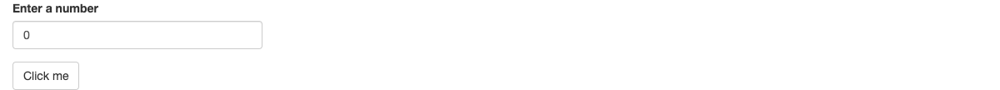

05:00
Shiny Apps
August 24, 2026
Exploring Shiny
What is Shiny?
- Shiny is an R package developed by Posit that makes it easy to build interactive web apps straight from R
- No HTML, CSS, or JavaScript required
- Shiny apps can be hosted on the web or run locally
- Makes it easy to explore your data and share your analysis
What You Can Do with Shiny
- Data Exploration: Utilize interactive widgets to filter and sort data dynamically
- Basic Visualizations: Create real-time, interactive graphs and charts from datasets
- Advanced Analytics: Integrate R’s robust statistical and machine learning capabilities for in-depth analysis
- Interactive Reports: Build dynamic reports that update based on user input or live data
- Production-Grade Dashboards: Develop complex, multi-page dashboards with user authentication and data streaming
Flavors of Shiny
- R Shiny: The original framework, allowing R users to build interactive web applications directly within R
- Shiny for Python: Extends Shiny’s capabilities to Python, enabling Python users to create Shiny applications using Python code
- Shiny Live: Enables you to run apps off the user’s browser rather than having to deploy them to a server (only available in Python right now)
- Shiny Express: A simplified version of Shiny for Python aimed at rapid development and deployment of applications with less coding and configuration required
- Quarto Dashboards: Not a Shiny app per se, but can connected to a Shiny server for increased interactivity
User Demos
- Have a look at the Shiny gallery
- Pick an app that you like?
- One thing you would like to learn from that app?
- One thing that you would improve
- Discuss with a neighbor
Feature Demos
- Now let’s look at feature demos
- What widgets, layouts, or features are you interested in?
- How would you use them in your own apps?
05:00
Professional Apps
- Here is a selection of modern, professional Shiny Apps
- PESKAS fisheries monitoring in Timor-Leste
- WaCSE for tracking reductions in GHG emissions as part of Washington State’s Sustainable Farms and Fields program
- JHU Lyme Disease Tracker
- movie-vue-r a Vue.js and Shiny app for exploring movie + COVID information
- These are mainly for inspiration, but try to find the code on GitHub and see how much you can understand
05:00
Getting Started with Shiny
- Open RStudio
- Start a folder for the workshop
- Install the
shinypackage (if not installed already) - Create a new Shiny app
- (File > New File > Shiny Web App)
- Run the Geyser App
- Try opening it in a browser
05:00
Challenge
- Look at the
faithfuldataset in R (hint:?faithful) - Create a Shiny app that displays a histogram of the
eruptionscolumn - Change the labels accordingly
- What kind of distribution do you see?
10:00
Elements of a Shiny App
Shiny App Basics
Two parts of a Shiny app:
- UI: User Interface
- Server: Server logic
They come together in a single script: app.R
The app.R Script
The User Interface (ui)
The UI
fluidPage() creates a Bootstrap page
The UI
- Bootstrap is a free front-end framework used in web development
- It is built on HTML, CSS and JavaScript
- There are many version of Bootstrap, the latest being version 5, but R Shiny uses version 3 by default
The UI
Under the hood, every UI function is translated to HTML.
This HTML can have styles attached to it, either by the style attribute, or by a CSS class.
The UI
To let users interact with your app, you can add input controls. A basic input control has:
- an
inputId - a
label - a
value
The UI
For example:
Updating the UI
- When the app runs, every user gets served the same HTML from the UI
- When the user interacts with the UI, we want that HTML to react and update based on user input
- That is possible because these outputs are reactive outputs
- The server logic (which we will discuss in detail soon) uses reactive programming that updates related inputs in the UI
Updating the UI
Shiny has several functions that turn R objects into reactive outputs for your ui: the Output family of functions.
Each function creates a specific type of output, for example:
| UI Function | Output type |
|---|---|
| textOutput() | text |
| tableOutput() | table |
| plotOutput() | plot |
| uiOutput() | raw HTML |
Updating the UI
Every output element needs a single argument: outputId. This is a simple string that needs to be unique.
This textOutput tells Shiny what to display. It’s a placeholder for what is goign to be produced by the server logic.
The Server Logic
The Server
- The server function builds an object named output and this object will contain all the code needed to display the R objects in the UI
- This output object is list-like
- Each R object that you want to display has its own entry in this list
- Therefore the name of every output in your UI needs to match a definition in the server, e.g.
output$text
The Server
Each entry in the output list should contain a Render function. You must use Render functions that match the Output functions:
| UI Function | Output type | Render function |
|---|---|---|
| textOutput() | text | renderText() |
| tableOutput() | table | renderTable() |
| plotOutput() | plot | renderPlot() |
| uiOutput() | raw HTML | renderUI() |
The Server
Using Inputs
- This works the same with inputs.
- The server can access an object named
inputthat will contain the value of all the input objects defined in the UI. - This object is list-like, just like the output object. Each input value has its own entry in this list, e.g.
input$number.
Combining the input and output objects, we get a simple app that displays the square of a number. 👏
Your Turn!
- Create a Shiny app that displays the square of a number
- Try entering different numbers manually
- Try using the up and down arrows
- Adjust the server logic to display the cube of a number
- Try other calculations
10:00
Eager Output
An output is eager: it will update as soon as the input changes.
This eagerness is handy: you don’t need to worry about updating the output when the input changes.
But what if you want to trigger the calculation only when you want?
Adding a Reactivity Modifier
You could use an actionButton as an event:
library(shiny)
ui <- fluidPage(
numericInput(inputId = "number",
label = "Enter a number",
value = 0),
actionButton(inputId = "button",
label = "Click me"),
textOutput(outputId = "text")
)
server <- function(input, output, session) {
output$text <- renderText({
input$number^2
}) |> bindEvent(input$button)
}
shinyApp(ui, server)
Try It Yourself!
- Add an
actionButtonto your app - Adjust the text on the button to read “Calculate”
- Make sure it functions as intended
- Go to the getting started lesson on control widgets
- See if you can control the calculation with a checkbox instead of a button
- What is wrong with this approach?
Acknowledgements
- Parts of this presentation were adapted from Veerle van Leemput’s Shiny 101: The Modular App Blueprint